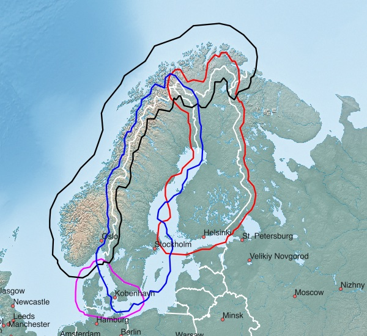
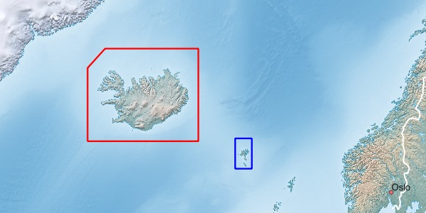

Northern Europe - available Maps:
| Norway | Sweden | Finland |
| Denmark | Iceland | Faeroe Islands |
Tips concerning download:
- click on the Netbook Icon in the PC browser: the map will be downloaded onto your personal computer
- click on the Locus Map Icon in the Android browser: map+design will be downloaded into Locus Map
- click on the OruxMaps Icon in the Android browser: the map will be downloaded into OruxMaps
Norway, Sweden, Finland, Denmark:

| Norway (North) NOR+NORTH 243 MB |
| Norway (South) NOR+SOUTH 517 MB |
| Sweden SWE+ 521 MB |
| Finland FIN+ 334 MB |
| Denmark DNK+ 219 MB |
Iceland, Faeroe Islands:

| Iceland ISL 70 MB |
| Faeroe Islands FRO 4 MB |